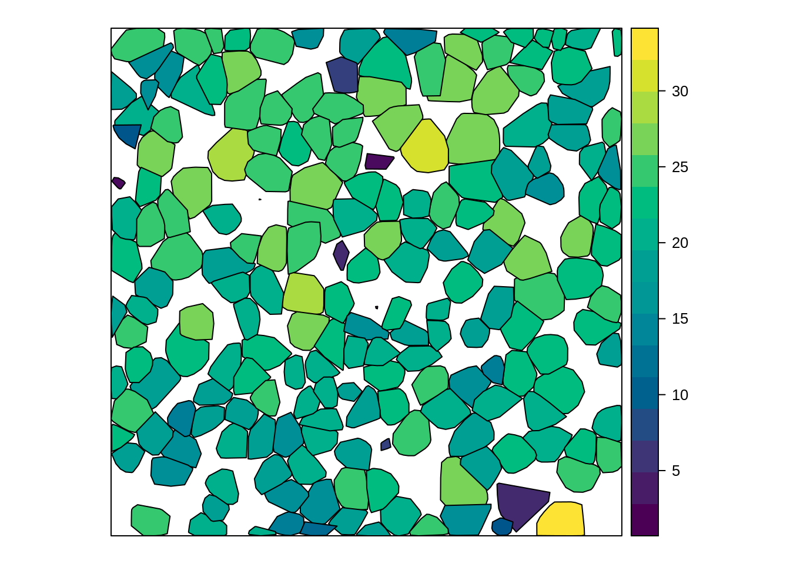
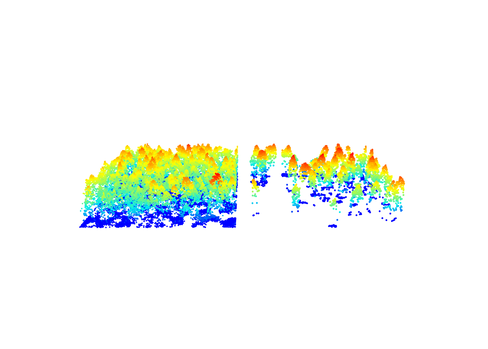
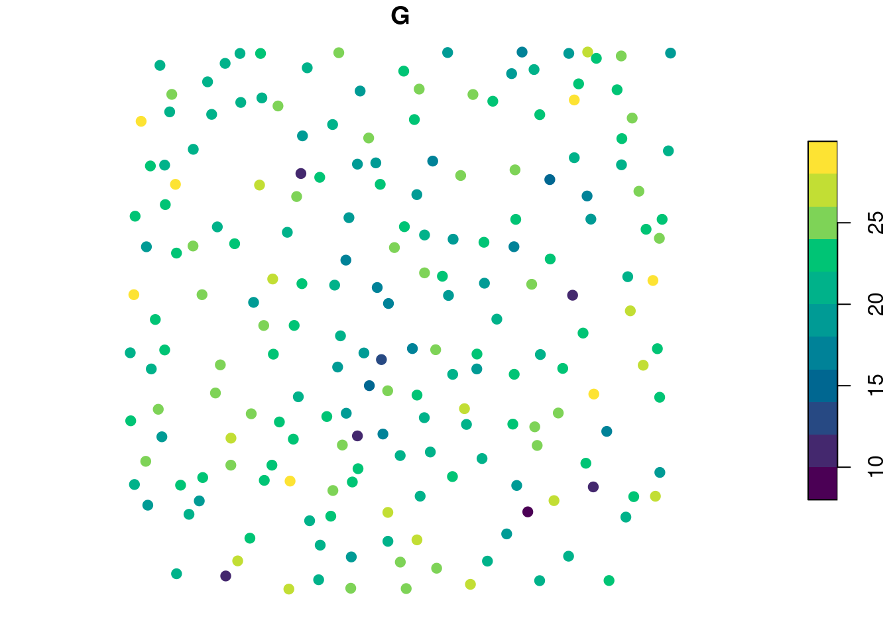
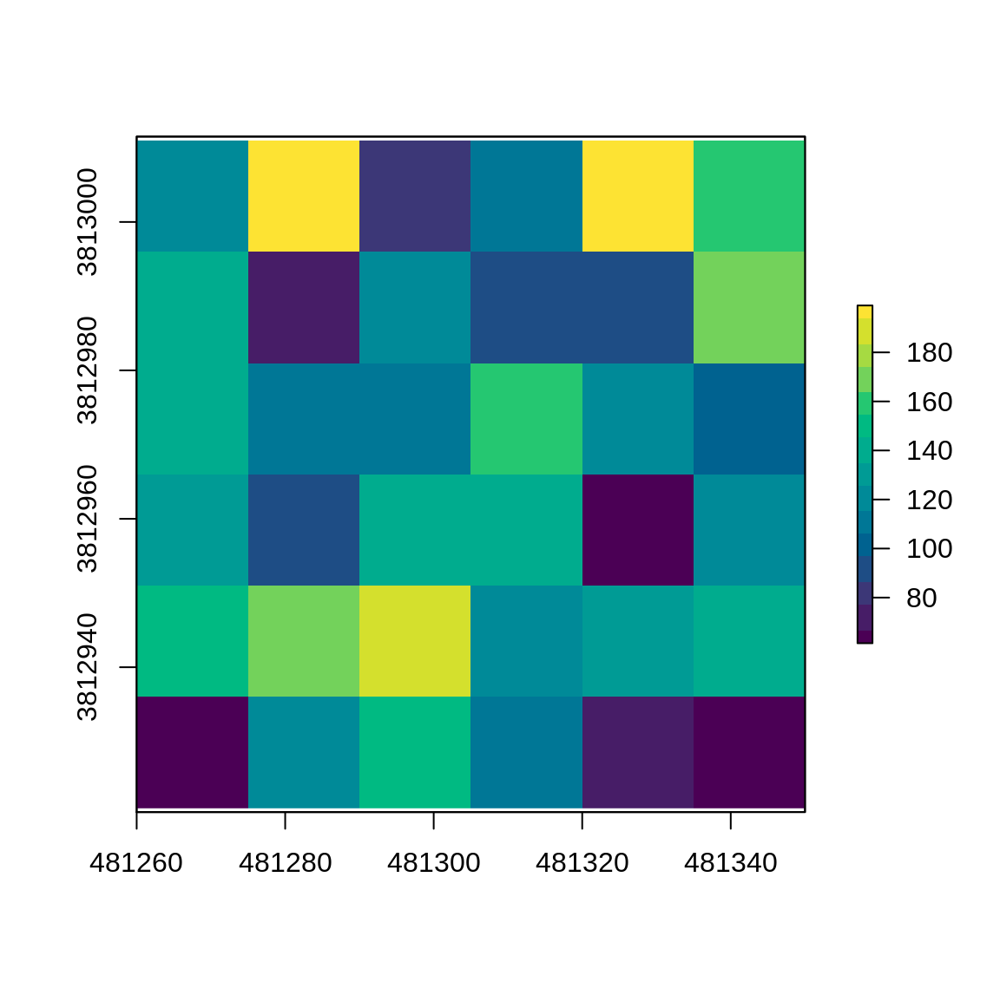

11 Derived metrics at the tree level
11.1 Overview
The “tree” level of regularization corresponds to the computation of derived metrics centered on each tree using the points that belong to each tree. Derived metrics calculated at tree level are the basis for an inventory at the individual tree level or the basis for individual species identification.
Similarly to what we have seen in chapters 8, 9, and 10 calculating derived metrics is straightforward and works exactly the same way as in cloud_metrics() or grid_metrics(). Derived tree metrics are calculated using the tree_metrics() function. The input data for this function is a point cloud that needs to contain information from tree segmentation (e.g. usually the treeID attribute). In the majority of cases tree_metrics() is run after segmenting tree crowns with segment_trees() (chapter 7) but the segmentation could also be performed in another way independently of lidR.
In the example below we show the basic use of the tree_metrics() function on the files we used in chapter 7. This file already stores an ID for each point referring to each tree, so we don’t need to perform the segmentation first. We compute two metrics z_max and z_mean using the formula list(z_max = max(Z), z_mean = mean(Z). The output is a SpatialPointsDataFrame.
LASfile <- system.file("extdata", "MixedConifer.laz", package="lidR")
las <- readLAS(LASfile, filter = "-drop_z_below 0") # read the file
metrics <- tree_metrics(las, ~list(z_max = max(Z), z_mean = mean(Z))) # calculate tree metrics
metrics
#> class : SpatialPointsDataFrame
#> features : 205
#> extent : 481260, 481349.9, 3812921, 3813011 (xmin, xmax, ymin, ymax)
#> Warning in proj4string(x): CRS object has comment, which is lost in output
#> crs : +proj=utm +zone=12 +datum=NAD83 +units=m +no_defs
#> variables : 3
#> names : treeID, z_max, z_mean
#> min values : 1, 2.16, 0.7275
#> max values : 205, 32.07, 21.8996759259259The XY coordinates of the points correspond to the XY coordinates of the highest point within each tree and each point is associated to 3 attributes treeID + the two user-defined metrics. The output can be visualized using the standard plot() function, however other plotting functions specific to sp objects may also be used. In the plot below the output is visualized using color to depict the z_max metrics.

Like other functions seen in chapters 9 and 10, users can create their own custom functions containing all of the metrics of interest. In the example below we show how to calculate metrics that are based both on point heights and intensities.
custom_tree_metrics = function(z, i) { # user-defined function
metrics = list(
z_max = max(z), # max height
z_sd = sd(z), # vertical variability of points
i_mean = mean(i), # mean intensity
i_max = max(i) # max intensity
)
return(metrics) # output
}In section 7.1 we described the delineate_crowns() function. This function also supports the computation of metrics in a similar way but returns polygons instead of points.
crowns_metrics <- delineate_crowns(las, func = ~custom_tree_metrics(z = Z, i = Intensity)) # delineate crowns
spplot(crowns_metrics, "z_max", col.regions = hcl.colors(30)) # some plotting
11.2 Applications
11.2.1 Selection of trees
tree_metrics() gives the ID of trees and associated metrics. We can use these data to filter the scene and remove trees with a low intensity.
metrics <- tree_metrics(las, ~list(imean = mean(Intensity))) # calculate tree intensity metrics
metrics <- metrics[metrics$imean > 80,] # filter intensity
subset <- filter_poi(las, treeID %in% metrics$treeID)
x <- plot(las, bg = "white", size = 4)
plot(subset, add = x + c(-100, 0), size = 5) # some plotting
11.2.2 Tree based inventory
Assuming we know a relationship between the derived metrics and a value of interest G - such as the biomass of a tree - we can map the resource. Lets assume that \(G = 0.7 \times z_{max} + 0.1 \times i_{mean}\). In real life a value of interest is more likely to be related to the crown size, but this is a simplified example. First we can compute G for each tree:
metrics <- tree_metrics(las, func = ~custom_tree_metrics(Z, Intensity)) # calculate intensity metrics
metrics$G <- 0.7 * metrics$z_max + 0.1 * metrics$i_mean # set value of interest
spplot(metrics, "G", col.regions = hcl.colors(5)) # some plotting
Then using the raster package, we can rasterize the map. Here we get the sum of G from each tree within each 15 m pixel to get the total value of G for a given pixel. The final output is a predictive model that mixes the area-based approach and the tree-based-approach.
r <- raster(extent(las)) # rasterize map
res(r) <- 15 # set resolution
map <- rasterize(metrics, r, field = "G", fun = sum) # extract sum of G at 15m
plot(map, col = hcl.colors(15)) # some plotting
This is a small example that may not be of interest, but one may imagine or test the result on a bigger data set.